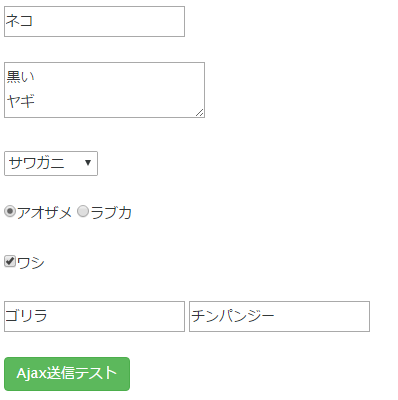

$('#ta1')[0].setSelectionRange(3, 9);
htm<textarea id="ta1"></textarea>
html
<script src="jquery.js"></script> <script src="html2canvas.js"></script> <script src="jspdf.min.js"></script> ～略～ <div id = "test1" style="background-color:white"> うゐのおくやまけふこえてあさきゆめみしゑひもせす<br> <input type="button" value="PDFダウンロード" onclick="test1()" class="btn btn-success" /><br> <img id = "img1" src="imori.jpg" /><br> </div> <iframe id="renderSpace" frameborder="0" width="450" height="450"></iframe>
js
function test1(){
// コンテンツ化を画像化します。
html2canvas(document.getElementById("test1"), {
onrendered: function (canvas) {
// コンテンツの画像化が完了したら以下の処理を行います。
// コンテンツの画像データを取得します。
var dataURI = canvas.toDataURL("image/jpeg");
// ｊｓPDFを生成し、画像データを渡します。
var pdf = new jsPDF();
pdf.addImage(dataURI, 'JPEG', 0, 0);
// とりこんだ画像データからレンダリングデータを作成し、PDFプレビュー画面を表示します。
var renderString = pdf.output("datauristring");
$("iframe").attr("src", renderString);
}
});
}
公式サイト
<script src="jquery.js"></script>
<script src="tab_input_k.js"></script>
<script>
$(function(){
tab_input_k("#ta1");
});
</script>
<textarea id="ta1"></textarea>
ソースコード
$(function(){
var str_date1 = '2016/4/18 00:00:00';
var str_date2 = '2016/4/15 00:00:00';
var date_count =diffDate(str_date1,str_date2);
console.log('日数 = ' + date_count);
});
/**
* 2つの日付の日数差を算出
*
* 文字列型日付、日付オブジェクトの両方に対応
*
* @param d1 比較日付1
* @param d2 比較日付2
* @returns number 日数
*/
function diffDate(d1,d2){
// 引数が文字列型の日付なら日付オブジェクトに変換
if(typeof d1 == "string"){
if(d1.indexOf('-') > -1){
d1 = d1.replace('-','/');// IEは「-」の区分に対応していないので「/」に置換
}
var d1 = new Date(d1);
}
if(typeof d2 == "string"){
if(d2.indexOf('-') > -1){
d2 = d2.replace('-','/');
}
var d2 = new Date(d2);
}
var u1 = Math.floor(d1);// UNIXタイムスタンプに変換
var u2 = Math.floor(d2);
// 2つの日付の日数差を算出
var diff_u = u1 - u2;
var date_count = diff_u / 86400000 ;
return date_count;
}
/**
* 日数差を適切な単位（年月日時分秒のいずれか）で返す
*
* 文字列型日付、日付オブジェクトの両方に対応
*
* @param date1 比較日付1
* @param date2 比較日付2
* @returns number 日数
*/
function diffDateX(date1,date2){
var d1 = date1;
var d2 = date2;
// 引数が文字列型の日付なら日付オブジェクトに変換
if(typeof String(d1) === "string"){
var d1 = new Date(d1);
}
if(typeof String(d2) === "string"){
var d2 = new Date(d2);
}
var u1 = Math.floor(d1);// UNIXタイムスタンプに変換
var u2 = Math.floor(d2);
// 日数差を適切な単位（年月日時分秒のいずれか）で返すを算出
var diff_u = u1 - u2;
var date_str = '';
var v = 0;
if(diff_u >= 31556952000){
v = Math.round(diff_u / 31556952000);
date_str = '約' + v + '年間';
}else if(diff_u >= 2629746000){
v = Math.round(diff_u / 2629746000);
date_str = '約' + v + 'ヶ月間';
}else if(diff_u >= 86400000){
v = Math.round(diff_u / 86400000);
date_str = '約' + v + '日間';
}else if(diff_u >= 3600000){
v = Math.round(diff_u / 3600000);
date_str = '約' + v + '時間';
}else if(diff_u >= 60000){
v = Math.round(diff_u / 60000);
date_str = '約' + v + '分間';
}else if(diff_u >= 1000){
v = Math.round(diff_u / 1000);
date_str = '約' + v + '秒';
}else{
date_str = '約' + v + 'ミリ秒';
}
return date_str;
}
実装例
ソースコード
<script src="/sample/style2/js/jquery-1.11.1.min.js"></script>
<script src="pulldown_panel.js"></script>
～略～
<script>
$(function(){
// プルダウン・パネルのCSSデータ
var css={
'width':'300px',
'height':'200px',
'background-color':'#f8e7ba',
};
// プルダウン・パネルを作成する
pulldown_panel('#btn1','neko_div','タイトル1','<div>あいうえお</div>',css);
});
</script>
～略～
いろはにほへと<input id="btn1" type="button" value="XXXテスト1" /><br>
ちりぬるをわかよたれそつねならむ うゐのおくやまけふこえてあさきゆめみしゑひもせす
pulldown_panel.jsjavascript
$(function(){
// URLクエリデータを取得する
var querys = getUrlQuery();
console.log(querys);
var json = JSON.stringify(querys);
$('#res').html(json);
});
/**
* URLクエリデータを取得する
*
* @return object URLクエリデータ
*/
function getUrlQuery(){
query = window.location.search;
if(query =='' || query==null){
return {};
}
var query = query.substring(1,query.length);
var ary = query.split('&');
var data = {};
for(var i=0 ; i<ary.length ; i++){
var s = ary[i];
var prop = s.split('=');
data[prop[0]]=prop[1];
}
return data;
}
{"animal":"neko","id":"99","v":"2"}
/**
* UNIXタイムスタンプから適切な単位（年月日時分秒のいずれか）で返す
*
* 文字列型日付、日付オブジェクトの両方に対応
*
* @param date1 比較日付1
* @param date2 比較日付2
* @returns number 日数
*/
function aboutDate(u){
var v = 0;
var data_str = '';
if(u >= 31556952000){
v = Math.round(u / 31556952000);
date_str = '約' + v + '年間';
}else if(u >= 2629746000){
v = Math.round(u / 2629746000);
date_str = '約' + v + 'ヶ月間';
}else if(u >= 86400000){
v = Math.round(u / 86400000);
date_str = '約' + v + '日間';
}else if(u >= 3600000){
v = Math.round(u / 3600000);
date_str = '約' + v + '時間';
}else if(u >= 60000){
v = Math.round(u / 60000);
date_str = '約' + v + '分間';
}else if(u >= 1000){
v = Math.round(u / 1000);
date_str = '約' + v + '秒';
}else{
date_str = '約' + v + 'ミリ秒';
}
return date_str;
}
simpleAjaxFormK({
'range':'#dummy',
'url':'test.php',
'msg_slt':'#msg',
'callback':function(res){
var data = JSON.parse(res);
～ サーバーからのレスポンス後の任意処理（Ajaxレスポンス語の処理） ～
}
});
SimpleAjaxFormK.jsのダウンロード
HTMLソースコード
～ 省略 ～ <script src="/sample/style2/js/jquery.js"></script> <script src="SimpleAjaxFormK.js"></script> ～ 省略 ～ <div id="msg" style="color:#1de4a4;"></div> <div id="dummy"> <input id="neko_text" type="text" value = "ネコ" /> <br><br> <textarea id="yagi_ta">黒い ヤギ</textarea> <br><br> <select id="kani_select"> <option value="1">モズクガニ</option> <option value="2" selected>サワガニ</option> <option value="3">ヤシガニ</option> </select> <br><br> <input type="radio" name="same_radio" value="1" checked="checked" />アオザメ <input type="radio" name="same_radio" value="2" />ラブカ <br><br> <input type="checkbox" name="wasi_check" value="1" checked="checked" />ワシ <br><br> <input id="gori_text.0" type="text" value = "ゴリラ" /> <input id="gori_text.1" type="text" value = "チンパンジー" /> <br><br> </div> <input type="button" value="Ajax送信テスト" onclick="test1()" class="btn btn-success" /> ～ 省略 ～
JavaScript
function test1(){
simpleAjaxFormK({
'range':'#dummy',
'url':'test.php',
'msg_slt':'#msg',
'callback':function(res){
var data = JSON.parse(res);
$('#msg').html('Ajaxレスポンス<br>');
$('#msg').append(res);
console.log(res);
}
});
}
サンプルSectionEditK.jsライブラリ
このライブラリは指定した親要素内のdiv要素を編集可能にします。html
<div id="test2"> <div class="id">100</div> <div class="animal_name">fox</div> <div class="note">abc123</div> </div>
JavaScript
sectionEditK('#test2',
['.id','.animal_name','.note'],
'test_save.php',
'test_read.php'
);
サンプル<script src="jquery.exif.js"></script> ～略～ <input type="file" id="file1" />
$('#file1').change(function() {
// アップロードファイルからExif情報を抜出す。
$(this).fileExif(function(exif) {
console.log(exif);
});
});
<script src="jquery.exif.js"></script>
function test(){
// サーバー上の画像ファイルから、Ajaxを利用してバイトデータを取得する
var xhr = new XMLHttpRequest();
xhr.open('GET', 'img/test4.jpg', true);
xhr.responseType = 'arraybuffer';
xhr.onload = function(e) {
// 画像ファイルのバイトデータを取得する
var arrayBuffer = this.response;
// バイトデータとコンテンツタイプからBlobを生成する
var blob = new Blob([arrayBuffer], {type: "image/jpeg"});
// BlobからExif情報を取得する
$.fileExif(blob,function(exif){
console.log(exif);
});
};
xhr.send();
}